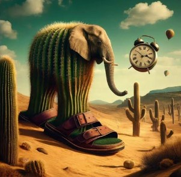

All Animals
The Italian Animals meme is a popular internet trend that involves creating humorous, nonsensical, and exaggerated names for animals using a mix of Italian-sounding words and playful language. The meme often features animals in absurd, funny, or fictional contexts and is paired with random, comically absurd names. The names themselves are a mix of recognizable Italian phrases, random sounds, and invented words, leading to a sense of whimsy and absurdity.
Here are a couple of examples of the meme:
1. Bombardilo Crocodilo: This name combines "bombard" (an English word often used to mean "attack" or "launch") and "crocodile," adding a sense of action to the reptile’s name. It’s a funny take on how animals could be given heroic or exaggerated qualities in an absurd context. The crocodile is imagined to be a fierce, battle-ready creature in this meme.
2. Lirili Larila: This phrase is an example of playful gibberish using an Italian-like sound structure. It's an entirely made-up and nonsensical name, but its rhythm and Italian-style vowels make it sound both humorous and catchy. It adds to the surreal charm of these animal names, as the phrase could be attributed to any creature in a completely random and absurd way.
The meme has evolved into a sort of internet tradition, with AI tools and human creators generating increasingly ridiculous names for various animals, mixing Italian linguistic elements with playful absurdity. These names don’t have much meaning but create a sense of enjoyment due to their sound and silliness.
The charm of the "Italian Animals" meme lies in its randomness, the blending of languages, and the fact that these names sound almost authentic while being totally fictional. The AI-generated aspect of the meme helps take the randomness to the next level, producing combinations that are even more outlandish and unexpected.
In the broader context, this meme is part of the larger genre of internet humor that thrives on nonsensical or surreal content, often pushing the boundaries of language and imagination for comedic effect.
